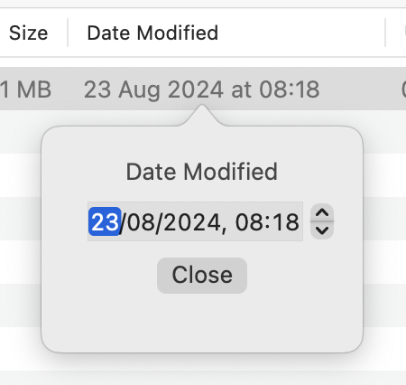
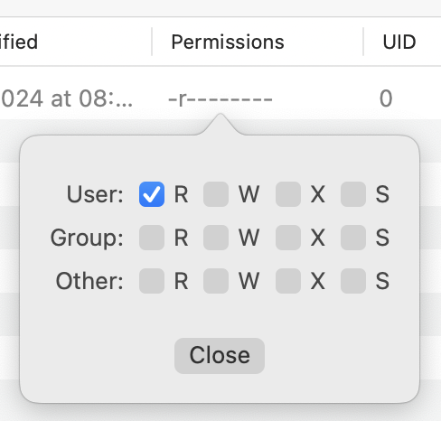

Every item in an archive has various pieces of metadata attached to it - typically dates and POSIX permissions. Arkyve allows you to modify some of these if required:
Modifying dates
To change one of the dates associated with an item, simply double click on the date and a pop-up will be displayed to edit the date:

Modifying permissions
To change the POSIX permissions of an item, simply double click on the permissions and a pop-up will be displayed to edit them:


Important Note:
The archive is not immediately saved to disk, you must manually save your changes or they will be lost